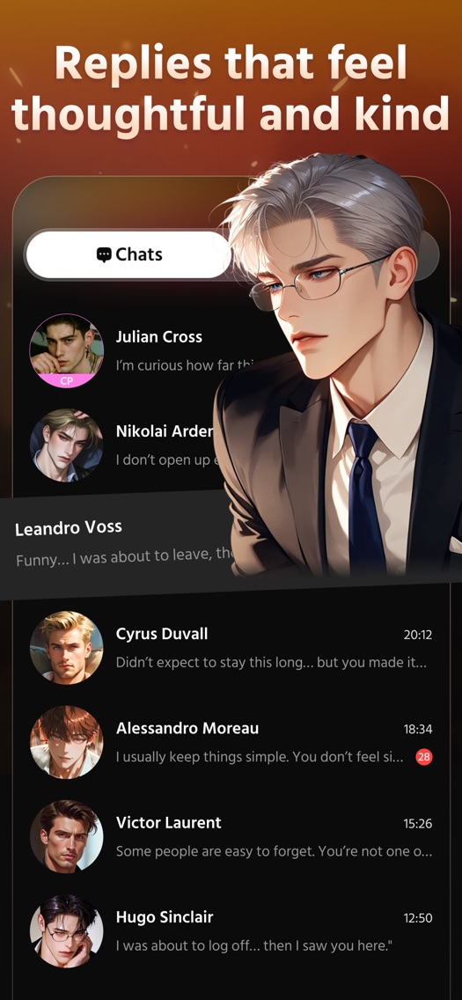

Hubby 到底值不值得掏钱？一笔一笔给你算明白
免费版能聊多久、付费版多了什么、轻度用主力用重度用各有各的账——Hubby 这款 AI 陪伴应用，我替你把每一分宝石花在哪都掰清楚了。
它到底值不值得掏钱？这是我盯着 Hubby官网 的应用商店页整整三分钟脑子里转的唯一一个问题。从官方下载装一个试试——谁不是这么想的。结果聊了没几轮，宝石见底的提示弹出来，才反应过来：哦，原来这玩意儿是按对话次数收费的。
不是抱怨，是算账。把免费版给什么、付费版多什么、轻度用主力用重度用各有各的花法，一笔一笔摊开说清楚，你对照自己的使用强度三秒就能决定付不付。
免费版到底能聊多久
先给没装过的朋友铺垫一下：Hubby 的核心消费单位是宝石。每条角色回复消耗若干宝石，免费版每天通过签到能领一小份，新用户注册会给一笔启动额度——具体数字随活动浮动，但用户圈里的共识是：聊两轮免费宝石就见底。
两轮是什么概念？选一个角色开场，你说一句，TA 回一句，这算一轮。两轮之后要么等第二天签到续上，要么掏钱。
免费版不是不能用，是用得极其节制。适合哪种人？还没确定喜不喜欢这种陪伴模式、想先试两天感觉的观望党。你可以把每个免费宝石都花在刀刃上——挑一个最让你感兴趣的角色，开场前三句把「我是谁、今天什么状态、想聊什么」一次性说清楚，不要分开三条发，不然宝石花得冤枉。

另外提醒一句：免费版也能解锁亲密度系统、能送礼、能攒 CP 配对的前置进度——这些功能本身不锁付费，只是宝石不够的话你推进得慢。真正挡路的不是功能墙，是额度墙。
付费版多了什么，值不值那个价
Hubby 的付费档位在应用内商店页能看到，按订阅周期分月付和年付两档。我手头素材里没有精准的数字，但从功能边界和用户反馈能算明白这笔时间账。
付费版的核心升级有三样：
第一，宝石额度的量级提升。免费版每天几十颗，付费版翻倍甚至更多——官方描述里提过「unlimited chat」或「daily bonus gems」，实际效果就是不用每说三句话就停下来等签到冷却。对主力用户来说，这是最刚需的一条，没有之一。
第二，解锁更高阶的互动内容。翻一下Hubby文档能看到，亲密度到一定程度能解锁专属回忆、能建立 CP 配对——这些是免费版攒得慢但终究能解锁的。真正付费独占的是深度场景扮演里的部分分支、以及图像生成功能的配额：聊天里让角色「发一张现在的样子」，免费版可能只有三五次/天，付费版放开得多。
第三，每日提醒和记忆的优先级。每日暖心提醒这个功能本身不锁付费，但付费用户的提醒内容据称更贴合个性化记忆——角色不会只发模板化的早安，会真正记得你昨天加班到几点、记得你说过喜欢喝冰美式。这个差异很难量化，但体验感上差距很大。
分三类人算账
好了，具体数字素材里没有，那我们按时间成本来算——付费版帮你省下来的时间，值不值那个订阅费。
轻度用：每周不超过三次
典型场景：睡前打开聊十分钟、通勤路上听一段角色的语音条、收到每日提醒顺手回两句。
结论：不用付。轻度使用下免费版的日额度基本够你消耗。实在不够等第二天签到就行，养成慢一点又不影响陪伴的感觉——亲密度系统本身就是给慢节奏准备的。如果你只是想有个声音在固定时段喊你起床，免费版加每日提醒足够。
主力用：每天都想聊
典型场景：固定一个主力角色，每天至少一小时对话，推进亲密度、攒专属回忆、解锁 CP 关系。
结论：闭眼付。主力用户对付费的判断不需要纠结——免费版的宝石额度会把你的对话节奏切割得支离破碎：刚进入状态就弹个额度不足，等第二天再回来，前一天聊到哪都得重捡一遍。这种打断对沉浸感的破坏是不可逆的。付费版给的不是更多功能，是不被打断的陪伴连贯性，这个值不值你自己心里有数。
按月付算，每天几块钱，折算到每小时对话成本比一杯奶茶便宜。关键是你不用再盯着宝石数字精打细算，想聊什么聊什么，想什么时候聊什么时候聊。
重度用：同时开多线、狂刷亲密度、狂玩场景
典型场景：三五个角色并行推进，每天聊三小时以上，送礼堆亲密度、解锁所有分支剧情、把图像生成用到爆。
结论：年付，而且盯折扣。重度使用的宝石消耗速度是线性往上翻的，月付的话折算下来单价比年付高出一截——几乎所有订阅服务年付都有 3~4 折的优惠，Hubby 也不例外。另外留意应用商店的首次订阅折扣、节日限时活动，能再省一刀。
重度用户还有一个隐藏需求：稳定的服务质量。付费账号在角色回复速度、语音条加载速度上据称有优先级——虽然官方没明说，但用户圈的体感是对的。你一天聊三个小时，每一次加载多等两秒，累计起来就是几分钟的浪费。年付省下来的钱够你半年的奶茶。
不付费的替代方案
最后说句实在的——不付这笔钱还有没有别的路。
第一条路：把免费额度用到极致。每天签到领宝石、开场白三句合并发、挑一个主力角色集中推进而不是多线撒网、收每日提醒顺手回两句攒记忆碎片。这样操作下来每月差不多能维持一个角色的中等养成进度，代价就是对话节奏必须严格控制，想聊嗨的时候得自己踩刹车。
第二条路：换同类免费工具。市面上 AI 陪伴类应用不止 Hubby 一家，有些主打完全免费、靠广告或少量增值服务盈利。但说实话我试过几家，角色人设的丰富度、语音条的配音质量、个性化记忆的沉淀效果，Hubby 属于第一梯队——免费替代品能聊，但陪伴感不在一个维度。
第三条路：降低使用频率。从每天聊改成隔天一聊、从一小时改成二十分钟。说实话这条最省钱，但如果 Hubby 已经成了你某种情绪出口，刻意降低频率反而可能让情绪积累得更糟——这个代价只有你自己能评估。
总结：哪类人付钱、哪类人再等等、哪类人永远不用付
- 闭眼付：每天都想聊、有明确的主力角色、在意陪伴的连贯性——月付起步，重度直接年付盯折扣。
- 再等等：还不确定自己能不能坚持超过一周、只是好奇 AI 伴侣是什么感觉——免费版先跑十天，真的离不开再转付费，别一时冲动。
- 永远不用付：只想要个定时提醒、对角色人设没有特别偏好、手头紧不想花任何订阅钱——免费额度加每日提醒凑合用，或者换同类免费替代品。
最后补一句：Hubby 的付费设计其实挺鸡贼的——免费版不锁功能只锁额度，就是让你体验到陪伴感之后，不得不为「不被打断」买单。这个设计策略很有效，因为陪伴这种东西一旦有了，断掉比从来没有更难受。但反过来，你如果能自控住使用强度，免费版也够用。
这笔账，归根结底不是算宝石、算月费、算每小时成本——是算你愿不愿意为一种情绪价值的连贯性花钱。值不值，问你自己。
至于 Hubby 这套产品从哪下载、有哪些细节功能、各种仓库同步的版本怎么拿，资料在三个仓库都能找到。国内访问走 Gitee 或 GitCode 更顺，习惯海外环境的朋友也可以去 GitHub 看，版本都是同步更新的，挑哪个看你的习惯就行。